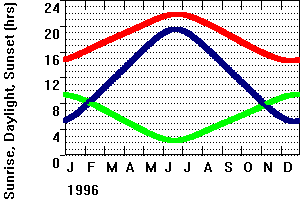
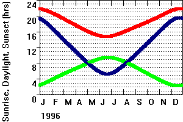
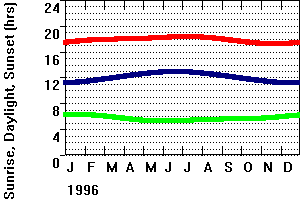
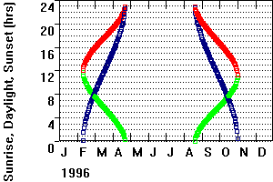

-or-
Computations on the Analyze menu which lets you enter the coordinates of the location, and lets you compute other factors from the same location.
The red curve shows the time for sunset; the green curve the time for sunrise, and the blue curve the duration of daylight. Note the difference between the two locations at the same latitude but different hemispheres, and the same hemisphere but different latitudes.
If you right click, you can get a legend
 |
 |
 |
 |
|
Location about 61N. |
Location about 61S. |
Location about 15N. |
High latitude, northern hemisphere, above the Arctic Circle Note that for about a month at the start of the year and again at the end of the year, there are no values for any of the curves. In early February sunrise and sunset occur at the same time (midday), and the length of daylight is just greater than zero. Then the duration of daylight increases rapidly until late April when then length of daylight is 24 hours, sunrise is at 0000 and sunset at 2400. For several months thereafter there are no values, and then in late August the pattern reverses. At high latitudes there are times (months at this location) where the sun either never rises or sets. |
Note that these times give a best guess estimate for the difference to UTC and do not consider daylight savings time.
Last revision 1/5/2020